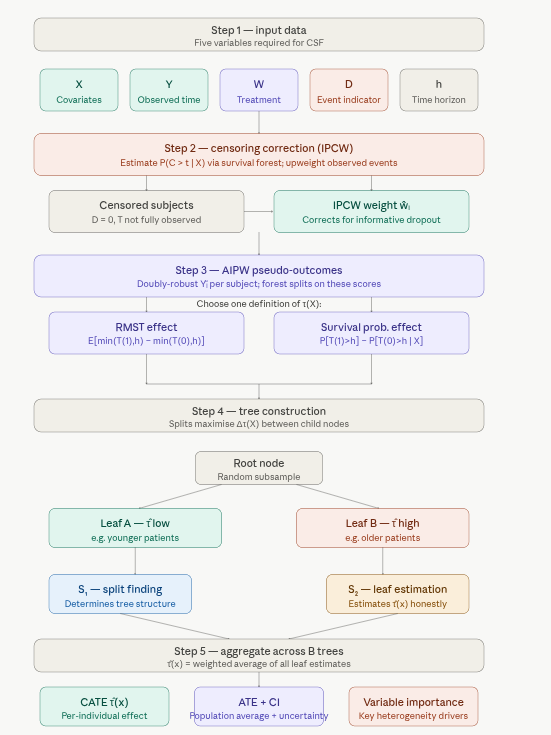

A Causal Survival Forest extends causal forests to handle time-to-event data — situations where the outcome is not just what happened, but when it happened, and where many subjects are right-censored (their event time was never observed). Like its parent method, a CSF estimates the Conditional Average Treatment Effect (CATE), \(\tau(X)\), but it does so on a survival timescale rather than a simple continuous outcome.
CSFs are particularly valuable in medicine (does this drug extend survival, and for whom?), economics (when does job training lead to re-employment?), and any setting where dropout, loss to follow-up, or end-of-study cutoffs create incomplete outcome data.
Key Concepts
Defining the treatment effect on survival data requires choosing a summary measure:
Restricted Mean Survival Time (RMST):
\[\tau(X) = E[\min(T(1), h) - \min(T(0), h) \mid X = x]\] This compares average survival time up to a fixed horizon \(h\) between treated and control groups.
Survival probability difference:
\[\tau(X) = P[T(1) > h \mid X = x] - P[T(0) > h \mid X = x]\] This compares the probability of surviving past time \(h\) under treatment versus control.
Right-censoring means we observe \(Y = \min(T, C)\) and an event indicator \(D = \mathbf{1}(T \leq C)\), where \(C\) is the censoring time. CSFs correct for this using Inverse Probability of Censoring Weighting (IPCW), which upweights observed events to account for those that were censored.
AIPW scores (Augmented Inverse Probability Weighting, from Cui et al., 2023) provide doubly-robust pseudo-outcomes for each subject, combining a direct outcome model with a propensity model. These pseudo-outcomes are what the forest actually splits on, enabling unbiased CATE estimation even with censoring.
Honest estimation — the same safeguard as in standard causal forests — partitions data so that the subsample used to find splits is strictly separate from the subsample used to estimate effects within leaves.
How CSFs Work
1. Inputs — Covariates \(X\), observed time \(Y\), treatment \(W\), event indicator \(D\), and time horizon \(h\).
2. Censoring correction — Estimate censoring probabilities \(\hat{P}(C > t \mid X)\) via a survival forest, then compute IPCW-corrected or AIPW pseudo-outcomes \(\tilde{Y}_i\) for each individual.
3. Tree construction — Grow \(B\) trees on random data/feature subsets. Each split maximizes the heterogeneity of pseudo-outcomes between child nodes, isolating subgroups with meaningfully different treatment effects.
4. Honest leaf estimation — A held-out subsample (\(S_2\)) estimates \(\tau(x)\) within each leaf, preventing overfitting to the split-finding subsample (\(S_1\)).
5. Aggregation and output — Average \(\tau(x)\) estimates across all \(B\) trees. Final outputs: per-individual CATE \(\hat{\tau}(x)\), population ATE, confidence intervals, and covariate importance.

Causal survival forest
The key addition relative to a standard causal forest is steps 2 and 3 — the censoring correction and pseudo-outcome construction. These are what make CSF handle survival data correctly. Without IPCW, censored subjects would introduce bias; without AIPW pseudo-outcomes, the forest would have nothing meaningful to split on.
The choice of\(\tau(X)\) definition (RMST vs. survival probability) should be made based on the scientific question: RMST gives a time-scale interpretation (“this drug adds X months of survival for patients like you”), while the survival probability difference is more directly interpretable clinically (“this increases your chance of surviving 5 years by X%”).
The honest estimation in step 4 mirrors what standard causal forests do but applied to the pseudo-outcomes from step 3 — it ensures the same data isn’t used to both carve the covariate space and measure effects within it.
How does it differ from Causal Forest and Survival Forest?
Aspect
Survival Forest
Causal Forest
Causal Survival Forest
Objective
Predict survival probability or hazard over time
Estimate heterogeneous treatment effects
Estimate treatment effects on survival outcomes
Outcome Type
Time-to-event (censored)
Continuous or binary
Time-to-event (censored)
Treatment Variable
None
Required (W: 0/1)
Required (W: 0/1)
Inputs
X, Y, D
X, Y, W
X, Y, D, W
Output
Survival curves or hazard functions
Treatment effect estimates \(\tau(X)\)
Treatment effect on survival \(\tau(X)\)
Use Case
Survival prediction (e.g., patient prognosis)
Treatment effect heterogeneity (e.g., drug impact)
Treatment effect on survival (e.g., therapy impact)
Assumptions
Handles censoring
Unconfoundedness, overlap
Unconfoundedness, overlap, censoring handled
Python estimator
Predictive survival model
CausalForest
CausalSurvivalForest
Practical Notes
Survival Forest: Used when the goal is purely predictive (e.g., forecasting patient survival based on covariates). It does not involve a treatment variable.
Causal Forest: Used for non-survival outcomes (e.g., blood pressure, test scores) to understand how treatment effects vary across individuals.
Causal Survival Forest: Used when both treatment effects and survival outcomes are of interest, combining the strengths of the other two models.
Causal Survival Forest (CSF) in Python
This tutorial uses CausalSurvivalForest from PyCausalML to estimate Conditional Average Treatment Effects (CATE) on a survival timescale.
We’ll cover:
Getting started with a causal survival forest
A use case built from Data/patients.csv
Setup
This notebook fits CausalSurvivalForest from PyCausalML (pycausalml.tree_based_models).
fit(X, treatment, time, event) returns the fitted estimator. predict returns a NumPy array of conditional average treatment effects. A fitted model also exposes explain and plot_shap.
Install the package from this repository, with the plotting and boosting extras.
The patient example is built with make_patient_survival from causal_tree_methods.py in this folder.
Code
import subprocessimport sysfrom pathlib import Pathdef _repo_root() -> Path: here = Path.cwd().resolve()for cand in [here, *here.parents]:if (cand /"pyproject.toml").is_file() and (cand /"src"/"pycausalml").is_dir():return candraiseFileNotFoundError("PyCausalML repository was not found. Run this notebook from the repository." )root = _repo_root()subprocess.check_call([ sys.executable, "-m", "pip", "install", "-q", "-e", f"{root}[plot,boost,shap]", "statsmodels",])print("PyCausalML ready.")
PyCausalML ready.
Code
%matplotlib inlineimport matplotlib.pyplot as pltimport numpy as npimport pandas as pdimport seaborn as snsfrom pycausalml import ( CausalSurvivalForest,)from pycausalml.tree_based_models import ( best_linear_projection, rank_average_treatment_effect,)import sysfrom pathlib import Pathdef _add_methods_path(): here = Path.cwd().resolve()for cand in [here, *here.parents]:for rel in ( Path("causal_tree_methods.py"), Path("Tutorials") /"05_01_Tree_Based_Models"/"causal_tree_methods.py", Path("Notebook") /"05_01_Tree_Based_Models"/"causal_tree_methods.py", ): path = cand / relif path.is_file(): sys.path.insert(0, str(path.parent))returnraiseFileNotFoundError("causal_tree_methods.py was not found")_add_methods_path()from causal_tree_methods import ( make_patient_survival,)def find_repo_root(start=None) -> Path: here = Path(start or Path.cwd()).resolve()for cand in [here, *here.parents]:if (cand /"Data").is_dir() and (cand /"Image").is_dir():return candraiseFileNotFoundError("Could not find a folder containing Data/ and Image/.")def data_path(filename: str) -> Path:return find_repo_root() /"Data"/ filenamesns.set_theme(style="whitegrid")plt.rcParams["figure.dpi"] =110print("Imported PyCausalML")
Imported PyCausalML
Use case
The runnable example is built from Data/patients.csv: age, comorbidity, baseline risk, and sex are the covariates, and treatment, failure time, and censoring are simulated on top of those covariates so the restricted-mean effect is identified.
This section uses CausalSurvivalForest to estimate Conditional Average Treatment Effects (CATE) on Restricted Mean Survival Time (RMST). Below, we prepare the patient cohort, train the forest, and show predictions.
count 3000.000
mean 3.441
std 15.588
min -96.602
25% -0.852
50% 4.209
75% 9.756
max 122.872
dtype: float64
Predict with Confidence Intervals
Code
mean, se = cs_forest.forest_.predict_interval(X_test)table = pd.DataFrame({"prediction": mean,"std_err": se,"ci_low": mean -1.96* se,"ci_high": mean +1.96* se,})print(table.round(3))
explain() attributes the predicted treatment effects \(\hat{\tau}(X)\) to covariates. A subsample of the training rows is used so the explanation stays fast.
Positive SHAP means the feature value pushes the predicted treatment effect (RMST gain) up.
Negative SHAP pushes the predicted treatment effect down.
These values explain heterogeneity (variation in \(\hat{\tau}(X)\)), not the survival time itself.
Dependence plots show how a covariate’s contribution changes as that covariate changes.
Compare SHAP values from explain() with feature_importance(). SHAP decomposes each prediction; forest importance summarizes how often a covariate is used for splits.
explain() applies directly to the fitted survival forest.
Summary and Conclusion
This notebook demonstrated CausalSurvivalForest from PyCausalML. Covariates come from Data/patients.csv, with treatment, failure time, and censoring simulated so the restricted-mean effect is identified. We defined a time horizon for RMST and fit the forest to estimate heterogeneous treatment effects while accounting for right-censoring. The forest provides non-parametric CATE estimates, variable importance, and a summary of heterogeneity. For methodology and theory, see Cui et al. (2023).
Resources
Cui, Y., Kosorok, M. R., Sverdrup, E., Wager, S., & Zhu, R. (2023). Estimating heterogeneous treatment effects with right-censored data via causal survival forests. Journal of the Royal Statistical Society: Series B (Statistical Methodology), 85(2), 179–211. https://academic.oup.com/jrsssb/article/85/2/179/7058918